大數據在生成式 AI 的應用｜觀念圖解複習
這一章的主角是生成式 AI：大型語言模型、圖像生成模型這類會產生新內容的模型。它們吃的資料超級多，所以從收集清洗、分散式訓練、上線部署，到 RAG 檢索、隱私法規、風險治理，每一站都和大數據有關。容易卡住的地方是工具名字和用途對不起來，以及法律和標準分不清。每個單元照「為什麼需要它 → 一步步搭起來 → 名詞各自定義 → 整合比較表 → 記憶鉤子 → 易錯提醒」排列。
- 下面黃框的「工具速查表」：Spark、Dask、Flink、Ray、Kubernetes、向量資料庫各一行用途。
- RAG 三步驟：事先建好意思地圖 → 把問題也換成座標 → 找最近的幾段交給語言模型（單元 ③）。
- 法規一句話：歐盟＋個資＝GDPR（法律）；ISO 27001 是自願認證的資安管理標準，不是法律（單元 ④）。
工具速查表
遮住第三欄，看工具名說得出用途；再遮住第一欄，看用途說得出工具名。
| 工具 | 類別 | 一行用途（可背） | 看到這些字就想到它 |
|---|---|---|---|
| 儲存 | |||
| HDFS | 分散式檔案系統 | 把超大檔案切塊，分散存在很多台電腦上 | PB 級、原始訓練資料 |
| 物件儲存（如 S3） | 雲端儲存 | 雲端放大量檔案，容量可一直加、成本低 | 數據湖底層、圖片影片 |
| 向量資料庫 | 專用資料庫 | 存向量嵌入，快速找出「意思最接近」的資料 | RAG、語意搜尋、相似度 |
| 批次運算（量大、可以等） | |||
| Hadoop MapReduce | 批次運算 | 分散計算的老將，每一步都讀寫磁碟，較慢 | Map、Reduce、磁碟 |
| Apache Spark | 批次運算 | 在記憶體裡分散運算，反覆計算比 MapReduce 快很多 | 記憶體運算、大規模前處理 |
| Dask | 批次運算 | 用熟悉的 Python（pandas、NumPy 寫法）做平行運算 | TB 級文字清洗、單機太慢 |
| 串流處理（要即時） | |||
| Apache Kafka | 訊息平台 | 資料流的輸送帶：接住大量即時事件、交給下游 | 即時事件、訊息佇列 |
| Kafka Streams | 串流處理 | 直接在 Kafka 的資料流上即時計算 | 即時、輕量 |
| Apache Flink | 串流處理 | 一筆一筆即時處理，延遲很低 | 低延遲、事件驅動 |
| Spark Streaming | 串流處理 | Spark 的串流版，把資料切成很小的批次連續處理 | 微批次、即時 |
| 分散式 AI 框架：Ray | |||
| Ray Core | 底層引擎 | 把 Python 工作分到很多台電腦、很多張 GPU | Tasks、Actors |
| Ray Data | 資料處理 | 大量資料的載入與前處理 | 備料 |
| Ray Train | 訓練 | 分散式模型訓練 | 多 GPU、多節點訓練 |
| Ray Tune | 調參 | 大規模超參數搜尋，支援貝氏最佳化、PBT | 超參數調整 |
| Ray Serve | 部署 | 可擴充的模型服務（上線推論） | 模型服務、推論 API |
| 部署與平台 | |||
| Docker（容器化） | 部署 | 把模型和執行環境打包成一致的「貨櫃」，到哪都能跑 | 容器、環境一致 |
| Kubernetes | 部署 | 管理大量容器：負載平衡、自動擴縮容、故障重啟 | 自動擴縮容、高併發 |
| SageMaker／Vertex AI | 雲端 ML 平台 | AWS／Google 的訓練、部署、監控一條龍服務 | 雲端部署、託管推論 |
| MLflow 等 MLOps 工具 | 治理 | 記錄實驗、資料與模型版本，方便重現與追溯 | 可重複性、可追溯性 |
先看全貌全章地圖：一個生成式 AI 專案的五站
本章的主角是「生成式 AI」：大型語言模型、圖像生成模型這類「會產生新內容」的模型。它們的特點是吃的資料超級多，所以每一站都和大數據有關。五個單元剛好是一個專案的順序：
| 站 | 這一站在問什麼 | 本章的關鍵名詞 |
|---|---|---|
| ① 資料從哪來、放哪裡 | 爬來的資料怎麼洗、存哪裡、怎麼處理？上線後看什麼？ | 去重、數據湖、Spark、串流、數據漂移、可用性 |
| ② 訓練與上線 | 很多台怎麼一起訓練？怎麼調參？怎麼撐住大量使用者？ | 資料平行、模型平行、Ray、貝氏最佳化、自動擴縮容、量化 |
| ③ 讓回答有憑有據 | 怎麼從大量文件找到相關段落？怎麼評分？ | 向量嵌入、向量資料庫、RAG、幻覺、ROUGE |
| ④ 保護個人資料 | 怎麼用資料又不洩漏個人？要守哪些法規？ | 差分隱私、聯邦學習、匿名化、合成數據、GDPR |
| ⑤ 風險與治理 | 會出什麼問題？怎麼管？ | 偏見、版權、數據記憶、深度偽造、RLHF、模型自噬 |
單元 ①生成式 AI 的大數據生命週期：收集清洗、儲存、前處理、上線監控
為什麼需要它？ 生成式模型動輒用幾兆個字、幾十億張圖訓練。資料一多，四件事都變難：爬來的資料很髒（雜訊、重複、有害內容）、一台電腦存不下、一台電腦算不完、上線後要一直盯著。這個單元把資料從「爬下來」到「上線之後」走一遍，每一站對應幾個工具和名詞。
一步步搭起來
- 收集。從網路爬蟲、公開資料集、企業內部文件、使用者互動日誌取得大量資料。
- 清洗。去掉 HTML 標籤、廣告等雜訊；去掉重複內容；過濾有害、低品質、含個資的內容。網路爬蟲資料最先遇到的就是這一關。
- 儲存。原始資料先放進數據湖（底層用 HDFS 或物件儲存），整理好的結構化資料可以進資料倉儲。
- 前處理。用 Spark、Dask 讓很多台一起做分詞、統一格式（標準化）、數據增強；要即時反應的資料用串流處理。
- 訓練、部署之後監控。看服務的延遲、錯誤率、資源使用率，也看使用者的資料有沒有漂移，發現問題就回頭補資料、重新訓練。
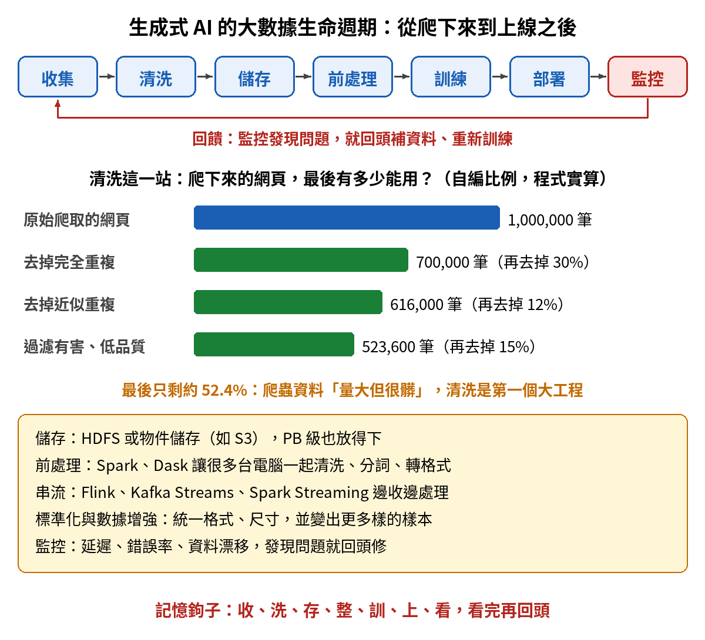
名詞各自定義
網路爬蟲資料的三大問題
- 雜訊：HTML 標籤、選單、廣告、亂碼、特殊符號，和真正內容混在一起。
- 重複：同一篇文章被轉載很多次。重複太多會讓模型過度記住某些內容、浪費運算。完全重複可用雜湊值比對；近似重複常用 MinHash 這類方法找出「幾乎一樣」的文件。
- 有害與低品質：仇恨、暴力、色情、垃圾內容，以及個人資料。要過濾，否則模型會學進去、甚至吐出來。
- 例子：上圖 1,000,000 筆網頁，三道清洗後約剩 52.4%（自編比例）。
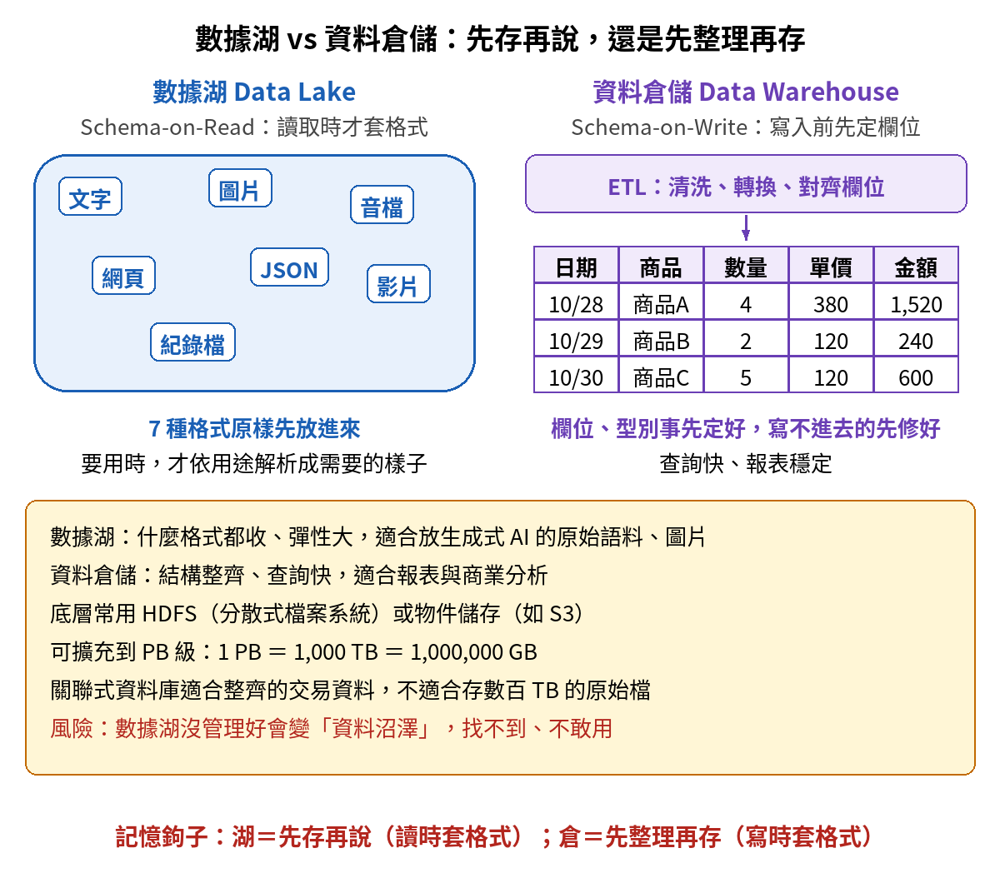
數據湖 Data Lake
- 是什麼：把各種來源、各種格式（結構化、半結構化、非結構化）的原始資料原樣集中存放的地方。
- Schema-on-Read（讀取時套格式）：存的時候不規定欄位，要用的時候才依用途解析。好處是彈性大、什麼都能先收。
- 適合：生成式 AI 的原始語料、圖片、音檔，還不確定之後怎麼用的資料。
- 風險：沒有目錄和管理時會變成「資料沼澤」：東西很多，卻找不到、不敢用。
資料倉儲 Data Warehouse
- 是什麼：存放整理過、結構化資料的地方，欄位和型別事先定好。
- Schema-on-Write（寫入時套格式）：資料進來前先經過 ETL（擷取、轉換、載入），格式不對的先修好才寫進去。
- 適合：報表、商業分析、固定的查詢。
HDFS 與物件儲存
- HDFS：Hadoop 分散式檔案系統。把很大的檔案切成區塊，分散存在很多台電腦，還會存多份備份；容量靠加機器擴充到 PB 級。
- 物件儲存：雲端的檔案倉庫（例如 Amazon S3），一個檔案就是一個「物件」，容量可以一直加、價格便宜，常當數據湖的底層。
- 對照：關聯式資料庫適合整齊的交易資料，存放數百 TB 的原始文字、圖片並不划算。
Apache Spark 與 Dask
- Spark：分散式運算引擎，把中間結果放在記憶體，反覆計算時比每一步都讀寫磁碟的 MapReduce 快很多（第 10 章）。適合大規模資料清洗、前處理。
- Dask：Python 生態的平行運算工具，寫法很像 pandas、NumPy，可以從一台電腦擴充到一群電腦。TB 級文字資料在單機跑太慢時很好用。
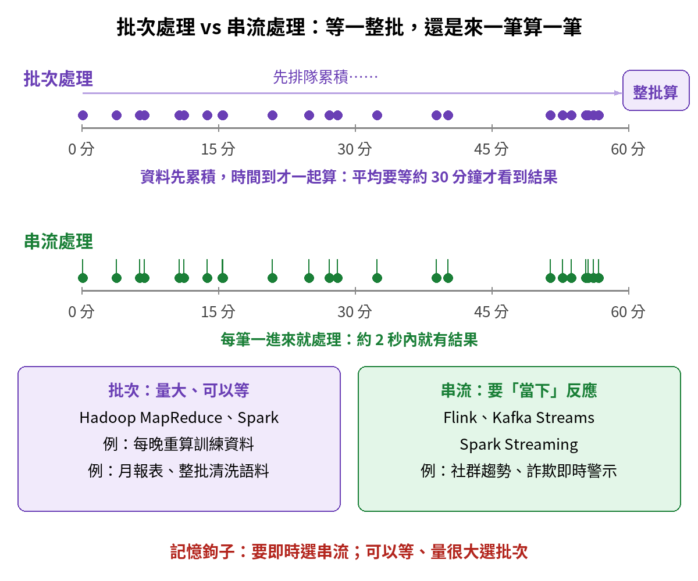
批次處理 vs 串流處理
- 批次處理 Batch：資料先累積，時間到了一起算。量大、可以等，例如每晚重算訓練資料。
- 串流處理 Streaming：資料一進來就處理，幾秒內有結果，例如即時監控社群話題、偵測詐欺。
- 串流工具：Flink（一筆一筆、低延遲）、Kafka Streams（在 Kafka 資料流上直接計算）、Spark Streaming（把資料切成很小的批次連續處理）。
數據標準化與數據增強
- 標準化：把資料整理成一致的樣子：圖片統一尺寸、像素歸一化；文字統一編碼、大小寫、標點。目的是讓模型穩定地學，不被格式差異干擾。
- 數據增強：用現有資料變出更多樣的樣本：圖片翻轉、旋轉、調亮度；文字同義改寫、回譯（翻成別的語言再翻回來）。目的是提高多樣性、減少過度擬合。
A／B 測試
- 是什麼：把使用者隨機分成兩組，一組用 A 版、一組用 B 版（例如兩種提示寫法），比較哪一版的滿意度、點擊率比較好。
- 和大數據的關係：要收集大量互動資料，差異才有統計上的意義；這是第 7 章假設檢定的應用。
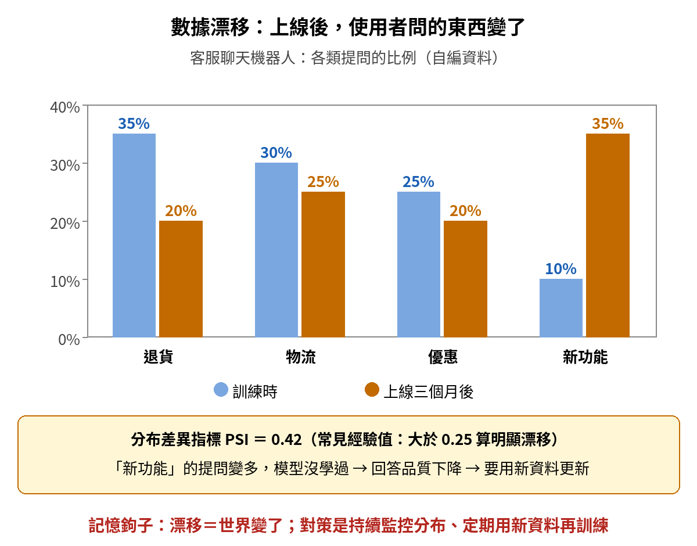
數據漂移 Data Drift
- 是什麼：上線後真實資料的分布，慢慢偏離訓練時的資料分布。
- 在生成式 AI 會怎樣：使用者問的主題、用語變了，模型沒學過，回答品質下降、甚至答非所問。上圖「新功能」提問從 10% 變成 35%。
- 怎麼發現與處理：持續監控輸入分布（例如 PSI 指標）、使用者回饋，定期或觸發式用新資料再訓練（第 11 章的 MLOps）。
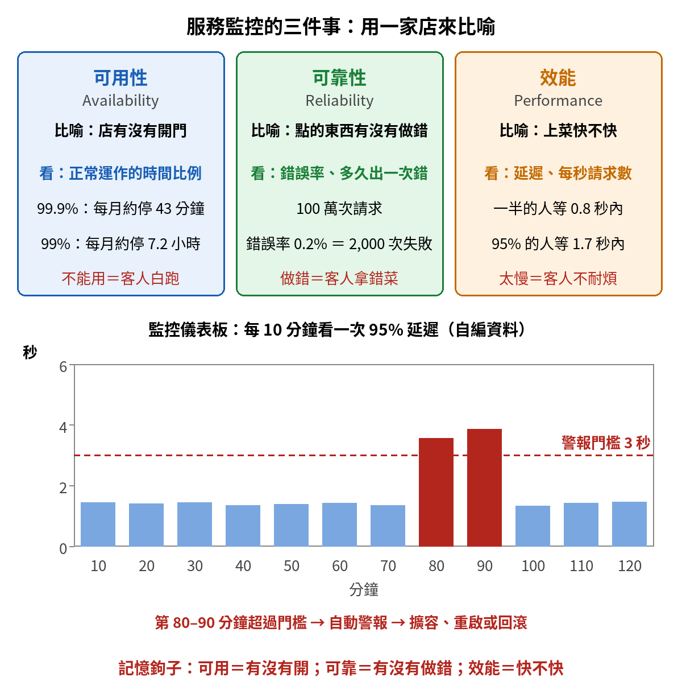
從零講：可靠性、可用性、效能。 這三個詞是「系統維運」的基本詞，和模型聰不聰明無關，問的是「這個服務穩不穩、快不快」。用一家店來想最容易：
可用性 Availability（店有沒有開門）
- 意思：使用者想用的時候，服務連得上、能用。常用「正常運作時間的比例」表示。
- 數字感：99.9% 聽起來很高，一個月（30 天）仍會停約 43 分鐘；99% 就是約 7.2 小時。
- 看什麼指標：服務有沒有回應、正常運作時間、資源（CPU、GPU、記憶體）是不是快滿了、會不會塞爆而停擺。
可靠性 Reliability（點的東西有沒有做錯）
- 意思：服務持續正確地完成工作，不常出錯、不常當機。
- 看什麼指標：錯誤率（失敗的請求占幾成）、多久出一次錯、出錯後多快恢復。上圖 100 萬次請求、錯誤率 0.2%，就是 2,000 次失敗。
效能 Performance（上菜快不快、接得了多少客）
- 意思：服務回應得夠快，而且一次能處理夠多的請求。
- 看什麼指標：延遲（回應時間，常看一半的人和 95% 的人各等多久）、每秒請求數 QPS（吞吐量）、資源利用率。
整合比較表（生命週期的三組對照）
| 比較項目 | 數據湖 | 資料倉儲 |
|---|---|---|
| 存什麼 | 各種格式的原始資料 | 整理好的結構化資料 |
| 格式何時決定 | 讀取時（Schema-on-Read） | 寫入時（Schema-on-Write） |
| 優點 | 彈性大、什麼都能先收 | 查詢快、報表穩定 |
| 適合 | 生成式 AI 原始語料、圖片、音檔 | 報表、商業分析 |
| 風險 | 沒管理會變資料沼澤 | 改欄位麻煩、不收非結構化資料 |
| 比較項目 | 批次處理 | 串流處理 |
|---|---|---|
| 什麼時候算 | 資料累積到一批、時間到才算 | 資料一進來就算 |
| 延遲 | 分鐘到小時 | 秒級以內 |
| 工具 | Hadoop MapReduce、Spark、Dask | Flink、Kafka Streams、Spark Streaming |
| 例子 | 每晚重算訓練資料、整批清洗語料 | 社群趨勢、詐欺即時警示 |
| 可用性 | 可靠性 | 效能 | |
|---|---|---|---|
| 比喻 | 店有沒有開門 | 東西有沒有做錯 | 上菜快不快 |
| 在問 | 連得上、能用嗎？ | 做得對、不常壞嗎？ | 等多久、接得了多少？ |
| 看的指標 | 正常運作時間、資源快滿了沒 | 錯誤率、多久出一次錯 | 延遲、每秒請求數 |
| 出問題時 | 擴容、切換備援 | 修錯誤、重啟、回滾版本 | 擴容、加快取、量化 |
- 生命週期：收、洗、存、整、訓、上、看，看完再回頭。爬蟲資料先處理雜訊、重複、有害內容。
- 湖＝先存再說（讀時套格式）；倉＝先整理再存（寫時套格式）。
- Spark 用記憶體、比 MapReduce 快；Dask 是 Python 版平行運算；要即時用 Flink、Kafka Streams、Spark Streaming。
- 看到延遲、錯誤率、資源使用率 → 想「服務穩不穩、快不快」→ 可用性、可靠性、效能。
單元 ②分散式訓練與部署：資料平行、模型平行、Ray、超參數搜尋、擴縮容與量化
為什麼需要它？ 大型生成式模型有幾十億到上千億個參數，訓練資料以 TB、PB 計。一台電腦算不完，也放不下；訓練完還要同時服務大量使用者。這個單元回答四個問題：怎麼分工一起訓練？用什麼框架？超參數怎麼找？上線後怎麼又快又省？
一步步搭起來
- 分散式訓練的目標。把訓練工作分給很多台電腦、很多張 GPU 一起做，縮短訓練時間，處理單機放不下的資料與模型。
- 決定拆什麼。資料太多 → 拆資料（資料平行）；模型太大一張 GPU 放不下 → 拆模型（模型平行）。
- 用框架管分工。Ray 這類框架負責把工作分派到各台電腦、收回結果，訓練、調參、上線服務都能用。
- 找好的超參數。學習率、批次大小這些要事先設定的值，用聰明的搜尋方法，少試幾次就找到好組合。
- 上線後撐住流量。容器化打包、負載平衡分流、自動擴縮容；再用量化、快取讓推論又快又省。
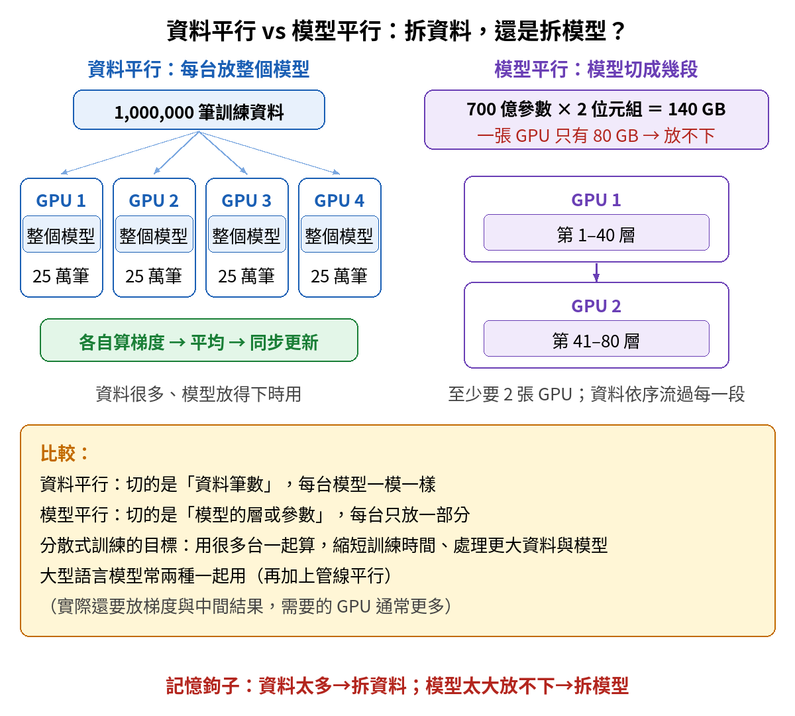
名詞各自定義
資料平行 Data Parallelism
- 是什麼：把訓練資料切成多份，每台機器（或每張 GPU）都放一份完整的模型，各自處理自己那份資料、算出梯度，再把梯度平均、同步更新所有模型。
- 適合：資料很多、模型放得進單張 GPU 的情況，是最常見的做法（第 11 章參數伺服器、All-Reduce）。
模型平行 Model Parallelism
- 是什麼：模型太大、一張 GPU 的記憶體放不下時，把模型的不同層或不同部分放到不同 GPU，資料依序流過。
- 例子：上圖 700 億參數，每個參數用 2 位元組存，光參數就要 140 GB，一張 80 GB 的 GPU 放不下，至少拆成 2 段。實際還要放梯度與中間結果，需要的 GPU 通常更多。
- 延伸：管線平行（Pipeline Parallelism）是模型平行的一種，把層分段後讓多批資料像生產線一樣流動。大型語言模型常把資料平行和模型平行一起用。
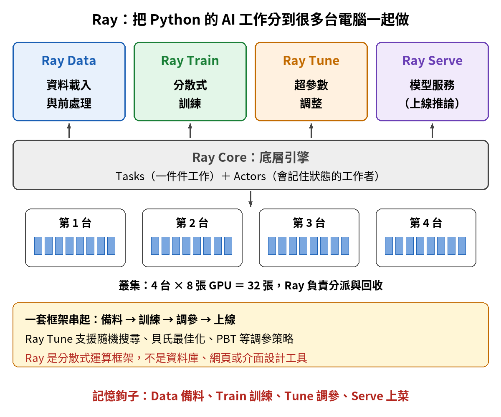
Ray
- 是什麼：開源的分散式運算框架，讓用 Python 寫的 AI 程式能分到很多台電腦、很多張 GPU 一起跑。它不是資料庫，也不是做網頁或介面的工具。
- Ray Core：底層引擎，提供 Tasks（一件件可以平行的工作）和 Actors（會記住狀態的工作者）。
- Ray Data：大量資料的載入與前處理。
- Ray Train：分散式訓練，把訓練分到多 GPU、多節點。
- Ray Tune：超參數調整，可同時跑很多組實驗，支援貝氏最佳化、PBT 等策略。
- Ray Serve：模型服務，把模型包成可以擴充的推論服務，處理大量上線請求。
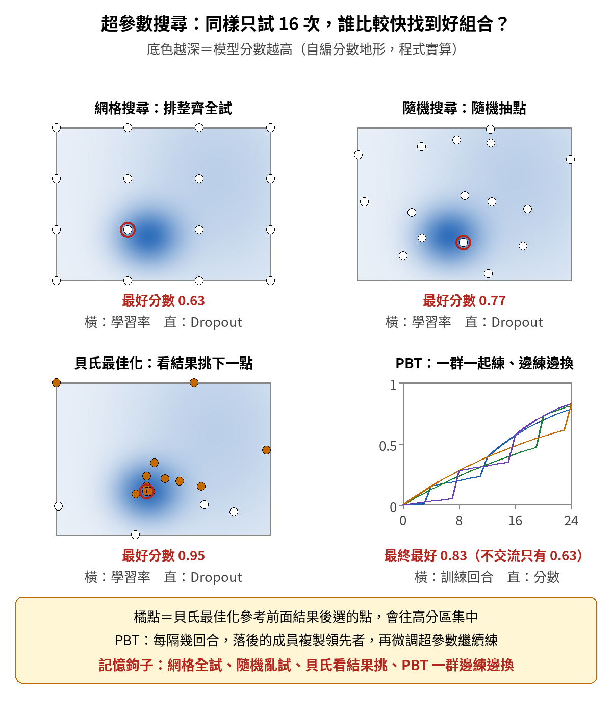
超參數 Hyperparameter
- 是什麼：訓練前要先設定、模型自己不會學的值，例如學習率、批次大小、層數、Dropout 比例。
- 難在哪：組合很多，而大型生成式模型訓練一次就很貴，不能每種都試。
網格搜尋 Grid Search
- 怎麼做：每個超參數列出幾個候選值，所有組合全部試一次。
- 問題：組合數是相乘的：6 個超參數各 5 個值就是 5 的 6 次方 ＝ 15,625 次，訓練一次很貴時做不到；而且點排得很整齊，容易剛好錯過好的區域（上圖最好只有 0.63）。
隨機搜尋 Random Search
- 怎麼做：在範圍內隨機抽組合來試。
- 比網格好在哪：同樣的次數，每個超參數會試到更多不同的值，常比網格更快找到好區域（上圖 0.77）。但它不會從過去的結果學習，每次都是盲抽。
貝氏最佳化 Bayesian Optimization
- 怎麼做：把已經試過的「超參數 → 分數」結果拿來建一個代理模型（Surrogate Model），預測哪裡可能更好、哪裡還不確定，再挑最有希望的下一組去試。
- 好處：會參考過去實驗，用比較少的次數找到接近最好的組合，特別適合訓練一次很貴的情況（上圖 16 次就到 0.95，橘點往高分區集中）。
PBT（Population Based Training，以群體為基礎的訓練）
- 怎麼做：同時訓練一群模型，每隔一段時間，表現落後的成員複製領先者的模型，再把超參數微調一下繼續訓練。
- 好處：邊訓練邊調整，超參數可以隨訓練進度改變，不必等全部練完才比較（上圖最終 0.83，不交流的同一群只有 0.63）。
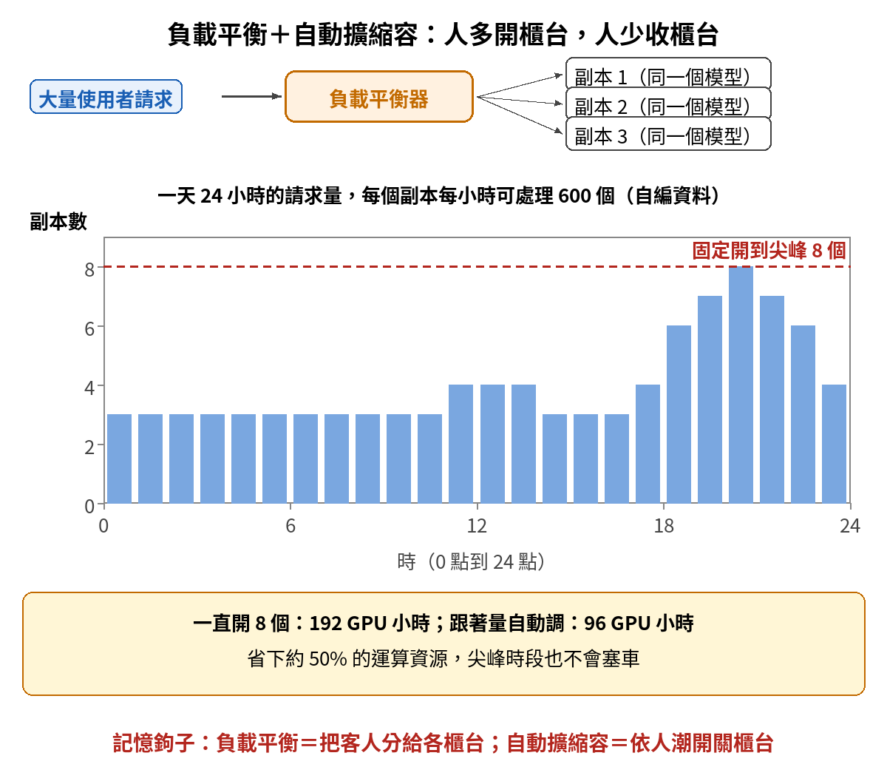
容器化與 Kubernetes
- 容器化（Docker）：把模型、程式和需要的套件打包成一個容器，在開發機、測試機、雲端都跑出一樣的結果。
- Kubernetes：管理大量容器的平台：自動部署、負載平衡、自動擴縮容、壞了自動重啟。
負載平衡 Load Balancing
- 是什麼：把大量請求平均分給多個服務副本，避免某一台塞爆、其他台閒著。
- 比喻：銀行的叫號機，把客人分到不同櫃台。
自動擴縮容 Auto Scaling
- 是什麼：依照請求量自動增加或減少服務副本數。人多開櫃台、人少收櫃台。
- 好處：尖峰不塞車、離峰不浪費。上圖跟著流量調整，比一直開到尖峰的量省下約一半運算資源。分析過去的請求模式，還能預先在尖峰前擴容。
雲端 ML 平台 SageMaker、Vertex AI
- 是什麼：AWS 的 SageMaker、Google 的 Vertex AI，提供訓練、部署、監控的一條龍託管服務。
- 好處：不用自己管機器，內建自動擴縮容、負載平衡、模型監控，適合大規模部署。
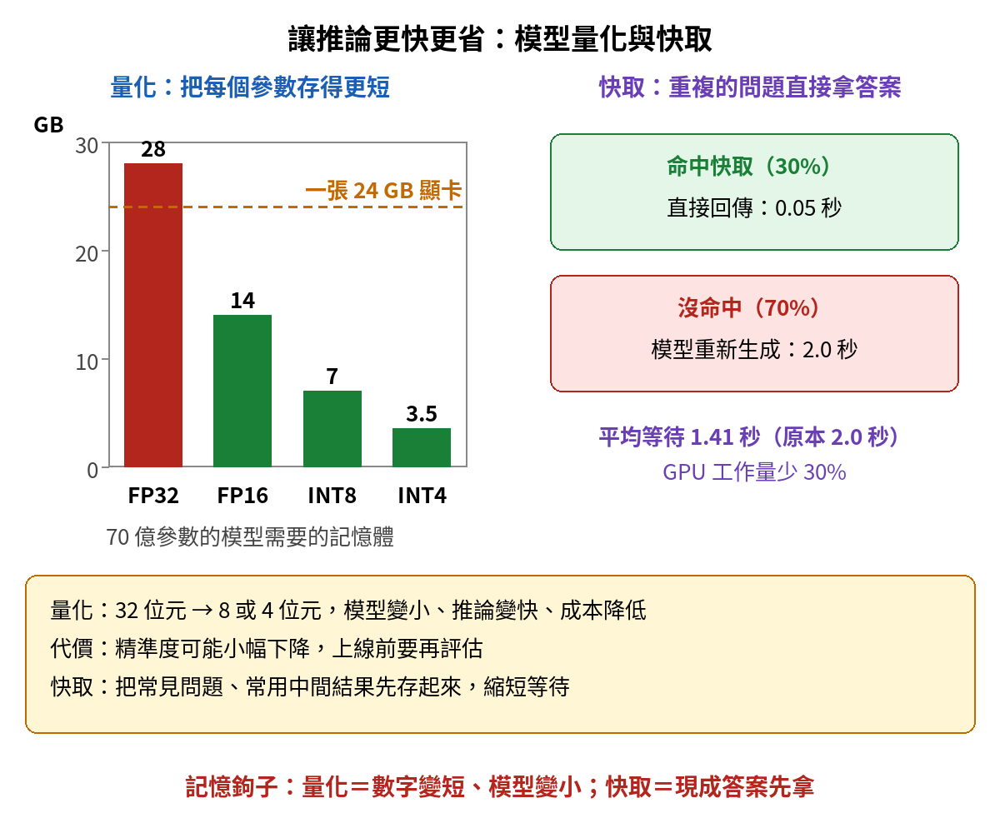
模型量化 Quantization
- 是什麼：把模型參數從 32 位元浮點數，改用 16、8 甚至 4 位元來存，等於把每個數字寫短一點。
- 好處：模型變小、推論變快、記憶體和成本降低。上圖 70 億參數從 28 GB 降到 7 GB（8 位元）。
- 代價：精準度可能小幅下降，上線前要再評估。
快取與預先計算
- 快取 Cache：把常見問題的答案、常用的中間結果先存起來，下次直接拿。上圖命中 30%，平均等待從 2.0 秒降到約 1.41 秒。
- 預先計算：推論很慢時，可以先分析大量使用紀錄，把熱門的結果、常用的特徵事先算好，或先把輸入資料整理成模型好吃的格式，使用者等的時間就變短。
整合比較表（分散式訓練與部署）
| 比較項目 | 資料平行 | 模型平行 |
|---|---|---|
| 拆什麼 | 資料筆數 | 模型的層或參數 |
| 每台放什麼 | 整個模型＋一部分資料 | 模型的一部分 |
| 什麼時候用 | 資料很多、模型放得下 | 模型太大、一張 GPU 放不下 |
| 溝通重點 | 梯度平均、同步更新 | 中間結果在 GPU 之間傳遞 |
超參數搜尋比較表
| 方法 | 怎麼挑下一組 | 會參考過去結果嗎 | 16 次的表現（上圖） | 適合 |
|---|---|---|---|---|
| 網格搜尋 | 所有組合排整齊全試 | 不會 | 0.63 | 超參數少、訓練便宜 |
| 隨機搜尋 | 範圍內隨機抽 | 不會 | 0.77 | 當基準、比網格省 |
| 貝氏最佳化 | 代理模型預測哪裡可能更好 | 會 | 0.95 | 訓練很貴、組合很多 |
| PBT | 一群一起練，落後者複製領先者再微調 | 會（邊練邊換） | 0.83 | 大型模型、可同時跑多組 |
| 手法 | 解決什麼 | 做法一句話 | 比喻 |
|---|---|---|---|
| 容器化 | 環境不一致 | 模型＋環境打包成容器 | 標準貨櫃 |
| 負載平衡 | 某台塞爆 | 請求平均分給副本 | 叫號機 |
| 自動擴縮容 | 尖峰塞車、離峰浪費 | 依流量開關副本 | 人多開櫃台 |
| 量化 | 模型太大、太慢 | 參數用更少位元存 | 數字寫短一點 |
| 快取 | 重複問題重算 | 常見答案先存起來 | 現成便當 |
- 分散式訓練的目標：很多台一起算，縮短時間、處理更大的資料與模型。
- 資料太多→資料平行（每台整個模型）；模型太大放不下→模型平行（每台一部分）。
- Ray 四兄弟：Data 備料、Train 訓練、Tune 調參、Serve 上菜。
- 網格全試、隨機亂試、貝氏看結果挑、PBT 一群邊練邊換；訓練很貴時選貝氏或 PBT。
單元 ③RAG 與向量資料庫：向量嵌入、檢索三步驟、幻覺、多語分詞、評估
為什麼需要它？ 大型語言模型有兩個老問題：知識停在訓練那天，而且會一本正經地講錯（幻覺）。要讓它根據公司文件、最新法規回答，最直接的做法是先找出相關段落，再讓它看著回答，這就是 RAG（檢索增強生成）。問題是：傳統搜尋是「比對字」，使用者的說法和文件的寫法常常對不上，就會漏找。所以要改成「比對意思」，這就需要向量嵌入和向量資料庫。
一步步搭起來
- 只比對字，會漏找。你打「失業給付」，系統只找得到有這四個字的文件；文件寫「失業補助」或「就業保險給付」就漏掉了。這叫詞彙不匹配。
- 把每段話放到一張「意思地圖」上。向量嵌入是用一個 AI 模型，把一段文字換成一長串數字，這串數字可以想成這段話在「意思地圖」上的座標。意思相近的話，座標靠得很近；意思無關的話，離得很遠。
- RAG 檢索三步驟。① 事先建好地圖：所有文件切成一段一段，每段算出座標，存進向量資料庫（建立索引，只要做一次）；② 把問題也換成座標：用同一個模型算出問題的座標；③ 找最近的幾段：在地圖上找離問題最近的幾段，交給語言模型當參考資料，再讓它根據這些段落回答。
- 一句話記住。先依「意思」找出最相關的段落，再讓 AI 看著這些段落回答。這樣 AI 回答時有憑有據，比較不會憑空亂編。
- 評估要有一把尺。要知道 AI 找得準不準、答得好不好，要先有一份由人訂好的標準答案。
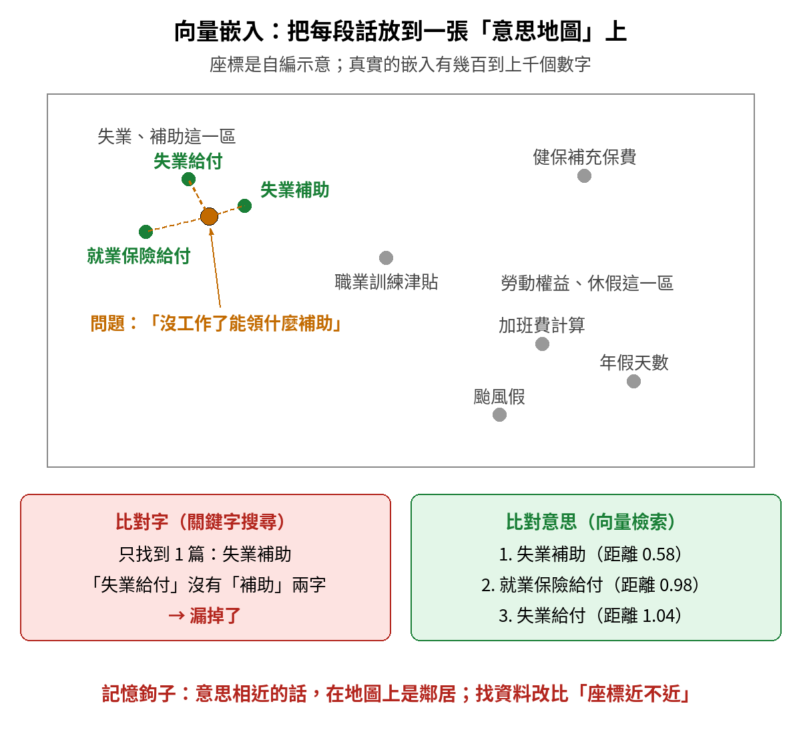
名詞各自定義
向量嵌入 Vector Embedding
- 是什麼：用模型把文字（或圖片、聲音）轉成一長串數字（向量）。真實的嵌入常有幾百到上千個數字。
- 關鍵性質：意思相近 → 向量相近。所以「找相似」可以變成「算距離」，例如算餘弦相似度。
- 例子：上圖問題「沒工作了能領什麼補助」，字面上只和「失業補助」共用「補助」兩字；但在意思地圖上，「失業給付」「就業保險給付」也是鄰居，向量檢索都找得到。
向量資料庫 Vector Database
- 是什麼：專門存放向量、並能快速做相似度搜尋的資料庫，例如 Milvus、Pinecone、Weaviate；FAISS 是常用的向量搜尋函式庫。
- 為什麼要專用的：一般資料庫擅長「欄位等於多少」的查詢，不擅長「找最像的前幾名」。向量資料庫用近似最近鄰（ANN）索引，在上億筆向量裡也能很快找到最近的幾筆。
- 在 LLM 裡的角色：存放知識庫文件段落的向量，供 RAG 檢索，增強模型的上下文。
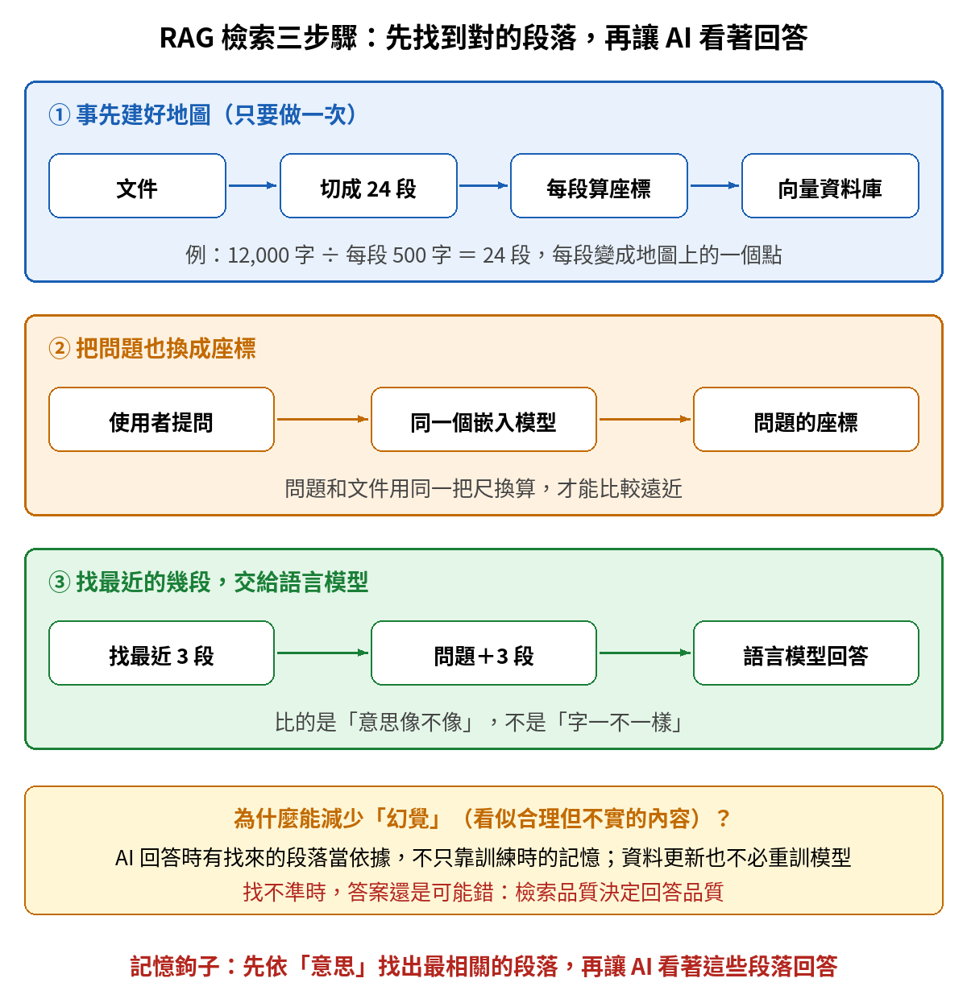
切塊 Chunking
- 是什麼：把長文件切成適當長度的段落再算向量。上圖 12,000 字、每段 500 字，切成 24 段。
- 為什麼：整份文件一個向量太粗，找不到精確段落；切太碎又會失去上下文，所以段落長度要試。
檢索增強生成 RAG（Retrieval-Augmented Generation）
- 是什麼：把資訊檢索和語言生成結合：先從外部文件找出相關段落，再把「問題＋段落」一起交給語言模型產生回答。
- 檢索步驟：問題轉成向量 → 在向量資料庫裡做相似度搜尋 → 取出最相關的幾段。
- 好處：回答有依據、可以附上來源；文件更新時只要更新向量資料庫，不必重新訓練模型；能用企業內部或最新資料。
- 限制：檢索品質決定回答品質：找錯段落，回答還是會錯。
幻覺 Hallucination
- 是什麼：模型產生看似合理、實際上不正確或沒有根據的內容。
- 怎麼減輕：RAG 提供可靠來源當依據；用高品質、經過查核的資料訓練或微調；要求模型附來源；用 RLHF 讓模型傾向誠實回答（單元⑤）。
分詞 Tokenization 與多語分詞器
- 是什麼：把文字切成模型處理的最小單位（token）。這是處理文字大數據、訓練 LLM 的第一步。
- 多語的挑戰：中文、日文沒有空格分詞，英文有空格；各語言的字元數量差很多。分詞器要能有效涵蓋多種語言，詞彙表大小要平衡，避免某些語言被切得很碎、浪費 token。
- 常見做法：子詞（subword）分詞，例如 BPE、SentencePiece：常見詞整個保留，罕見詞拆成小片段。
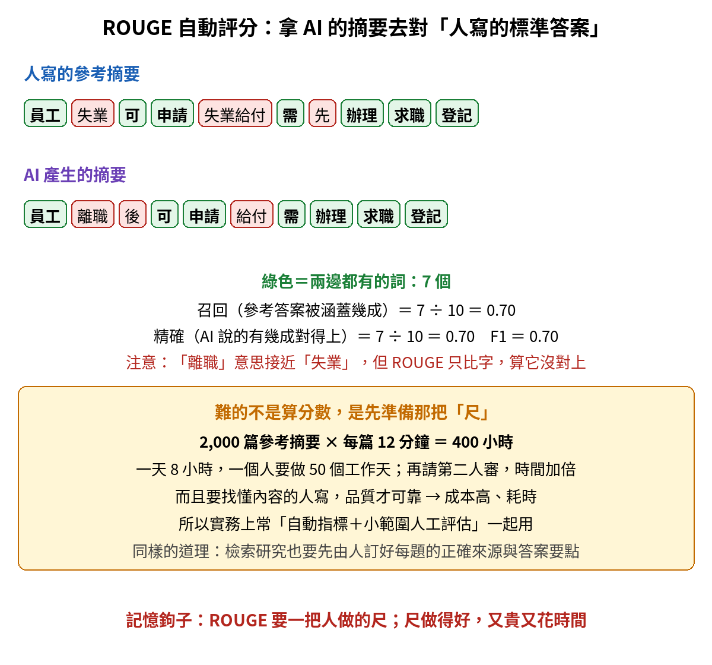
ROUGE 與自動評估指標
- 是什麼：ROUGE 比對模型產生的摘要和人寫的參考摘要有多少字詞重疊，常用在文本摘要；BLEU 常用在機器翻譯，概念類似。
- 例子：上圖 10 個參考詞有 7 個被 AI 摘要涵蓋，召回 0.70。
- 限制：只比字、不懂意思：「離職」和「失業」意思接近，ROUGE 仍算沒對上。
參考答案（黃金標準）的成本
- 為什麼需要：自動指標要有「標準答案」才能比。這把尺要有人做。
- 難在哪：要大量、高品質、由懂內容的人寫或審過的參考答案，花人力又花時間。上圖 2,000 篇 × 12 分鐘＝400 小時，一個人要做 50 個工作天。
- 實務做法：自動指標加上小範圍的人工評估一起用；重要的評估請第二位評分者，確認不是一個人說了算。
整合比較表（RAG 相關對照）
| 比較項目 | 關鍵字搜尋（比對字） | 向量檢索（比對意思） |
|---|---|---|
| 比什麼 | 字有沒有一樣 | 座標近不近（意思像不像） |
| 說法不同時 | 容易漏找（詞彙不匹配） | 意思接近就找得到 |
| 需要什麼 | 倒排索引 | 嵌入模型＋向量資料庫 |
| 弱點 | 同義詞、換句話說 | 專有名詞、編號有時反而不如比對字 |
| 做法 | 怎麼讓模型知道新知識 | 要重新訓練嗎 | 適合 |
|---|---|---|---|
| RAG | 回答前先檢索相關段落給它看 | 不用，更新資料庫即可 | 常更新的文件、要附來源 |
| 微調 | 用新資料再訓練一小段 | 要 | 固定的風格、專業用語 |
| 提示工程 | 在提示裡寫清楚規則、給範例 | 不用 | 格式、語氣控制 |
| 評估方法 | 怎麼評 | 優點 | 限制 |
|---|---|---|---|
| ROUGE | 和參考摘要比字詞重疊 | 快、便宜、可大量算 | 只比字、要參考答案 |
| BLEU | 和參考譯文比詞組重疊 | 翻譯常用、可大量算 | 同上 |
| 人工評估 | 人看內容打分或排序 | 最貼近真實感受 | 貴、慢、要多人一致 |
- 意思相近的話，在「意思地圖」上是鄰居；找資料改比「座標近不近」。
- RAG 三步驟：事先建好地圖 → 把問題也換成座標 → 找最近的幾段交給語言模型。
- 一句話：先依「意思」找出最相關的段落，再讓 AI 看著這些段落回答。
- 自動評分要一把人做的尺；尺做得好，又貴又花時間。
單元 ④隱私保護與法規：差分隱私、聯邦學習、匿名化、同態加密、合成數據、GDPR
為什麼需要它？ 生成式模型吃的資料裡常有個人身分資訊（PII：姓名、身分證字號、電話、地址、病歷）。模型可能把它記住，甚至在回答裡吐出來；處理不當還會違法。這個單元先講幾種「用資料又保護個人」的技術，各自保護的是什麼、代價是什麼；再整理幾個常考的法規與標準，分清楚哪些是法律、哪些是自願認證的標準。
一步步搭起來
- 先少拿。只收必要的資料（資料最小化），不需要的個資一開始就不要收。
- 拿到的先去識別。拿掉或替換姓名、證號（匿名化、假名化）；但要小心「幾個欄位一組合就認得出人」。
- 用技術保護。結果加雜訊（差分隱私）、資料不出門（聯邦學習）、加密狀態下計算（同態加密）、用假資料代替真資料（合成數據）。
- 守法規。看資料是誰的、在哪裡、哪一類：歐盟個資看 GDPR、美國醫療看 HIPAA、美國上市公司財報看 SOX；ISO 27001 是自願取得的資安管理認證。
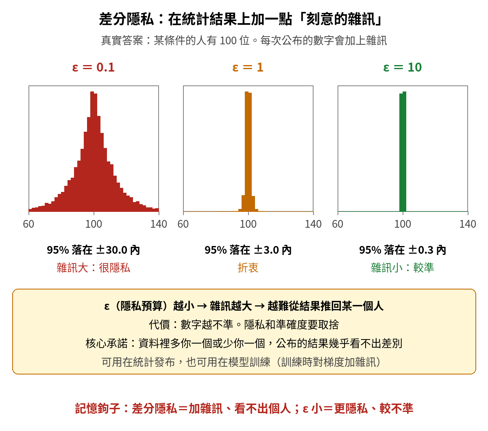
名詞各自定義
差分隱私 Differential Privacy
- 核心想法：在統計結果或訓練過程中加入經過計算的雜訊，讓人看不出某一個人的資料在不在裡面：資料裡多你一個或少你一個，公布的結果幾乎一樣。
- 隱私預算 ε：ε 越小，雜訊越大、越隱私，但結果越不準。上圖 ε＝0.1 時 95% 落在 ±30.0，ε＝10 時只有 ±0.3。
- 在 AI 的用法：訓練時對梯度加雜訊（例如 DP-SGD），降低模型記住個別訓練資料的機會。
聯邦學習 Federated Learning
- 核心想法：資料留在本地（手機、醫院、銀行），各自訓練，只把模型更新送到中央伺服器彙總（第 11 章圖示）。
- 保護什麼：原始資料不集中、不離開本地。
- 限制：模型更新本身仍可能洩漏部分資訊，常再搭配差分隱私或安全彙總；各地資料分布不同、通訊成本高。
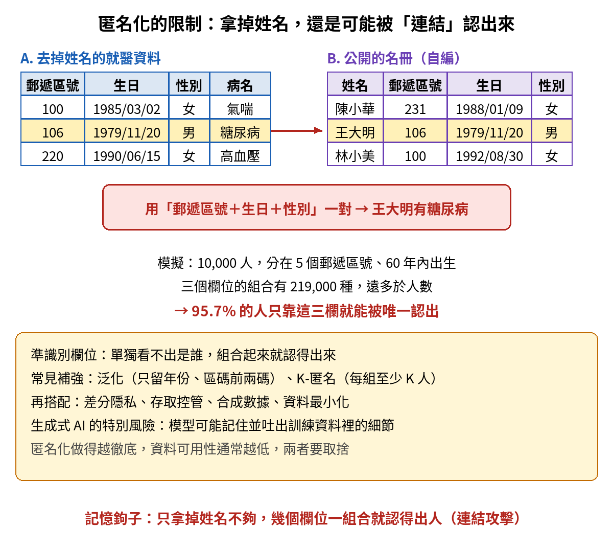
匿名化與去識別化 Anonymization
- 是什麼：拿掉或改寫能直接認出個人的欄位（姓名、證號），讓資料不容易對回某個人。
- 限制一：連結攻擊：郵遞區號、生日、性別這類準識別欄位單獨看不出是誰，和外部資料一組合就可能認出來。上圖模擬中，95.7% 的人靠這三欄就被唯一認出。
- 限制二：可用性下降：去識別做得越徹底（泛化、刪欄位），資料能分析的細節越少。
- 限制三：模型記憶：生成式模型可能從看似匿名的資料學到細節，再組合出可辨識的內容。
- 常見補強：泛化（只留出生年、區碼前兩碼）、K-匿名（每種組合至少有 K 個人）、假名化（用代號取代姓名，但對照表要另外保管）。
同態加密 Homomorphic Encryption
- 核心想法：資料保持加密的狀態下就能直接計算，算完解密的結果，和用明文計算一樣。
- 用途：把資料交給雲端或第三方運算、訓練或推論，對方全程看不到明文。
- 限制：計算量非常大、很慢，目前多用在特定、較小規模的計算。
合成數據 Synthetic Data
- 是什麼：用生成式模型（例如 GAN）產生「統計特性像真資料、但不是真人真事」的資料，例如合成人臉、合成交易紀錄。
- 好處：要多少、要什麼樣子都能補：補足稀少類別、增加多樣性；不必直接使用真人資料，降低隱私風險；也能用來測試模型在少見情況下穩不穩。
- 限制：生成模型本身要用真實資料訓練；不保證沒有偏見，真實資料的偏見可能被複製；太乾淨的合成資料可能和真實世界有落差；也可能不小心「記住」並重現真人資料。
資料最小化與存取控管
- 資料最小化：只收集、只保留達成目的所需的資料（GDPR 原則之一）。
- 存取控管與加密：誰能看哪些資料要分權限；儲存和傳輸時加密，留下存取紀錄。
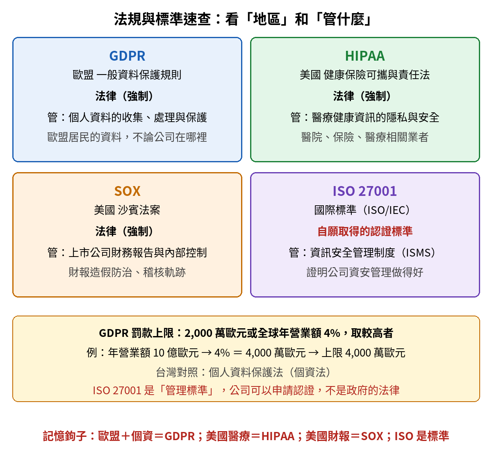
GDPR（歐盟一般資料保護規則）
- 性質與範圍：歐盟的法律。只要處理歐盟居民的個人資料，不論公司設在哪個國家都要遵守。
- 處理原則：合法公平透明、目的限制、資料最小化、正確性、儲存期限限制、完整性與保密性。
- 當事人權利：查閱、更正、刪除（被遺忘權）、限制處理、資料可攜、反對處理等。
- 罰款：最高 2,000 萬歐元或全球年營業額 4%，取較高者。
HIPAA、SOX、ISO 27001、台灣個資法
- HIPAA：美國的法律，保護醫療健康資訊的隱私與安全，適用醫院、保險、醫療相關業者。
- SOX（沙賓法案）：美國的法律，規範上市公司財務報告的正確性與內部控制，和個資保護不同主題。
- ISO 27001：國際標準，規定怎麼建立「資訊安全管理制度（ISMS）」。公司自願申請第三方驗證、取得認證，用來證明資安管理做得好；它不是法律，也不是專門管歐盟個資。
- 台灣個資法：台灣的《個人資料保護法》，規範個人資料的蒐集、處理、利用，台灣考題常拿來對照。
整合比較表（取得與保護資料的方法）
| 方法 | 做什麼 | 原始資料誰看得到 | 主要解決 | 限制 |
|---|---|---|---|---|
| 真實資料收集 | 爬蟲、公開資料集、使用者紀錄 | 收集方 | 量大、貼近真實 | 髒、偏見、隱私與版權風險 |
| 數據增強 | 把現有資料變形（翻轉、改寫） | 收集方 | 增加多樣性 | 變不出原本沒有的類別 |
| 合成數據 | 生成模型造出逼真的新資料 | 訓練生成模型的人 | 補量、補多樣、降低隱私風險 | 不保證無偏見；要真資料訓練 |
| 匿名化 | 拿掉或改寫可識別欄位 | 收集方 | 降低直接認出個人 | 連結攻擊、可用性下降 |
| 差分隱私 | 結果或訓練加計算過的雜訊 | 收集方（公布的是加雜訊結果） | 看不出某一個人 | 雜訊大時不準 |
| 聯邦學習 | 資料留本地，只傳模型更新 | 只有本地 | 原始資料不集中 | 通訊成本、更新仍可能洩漏 |
| 同態加密 | 加密狀態下直接計算 | 沒人看到明文 | 交給第三方算也安全 | 非常慢、運算量大 |
法規速查表
| 名稱 | 地區 | 性質 | 管什麼 | 看到這些字就選它 |
|---|---|---|---|---|
| GDPR | 歐盟 | 法律（強制） | 個人資料的收集、處理、保護 | 歐盟用戶＋個人資料 |
| HIPAA | 美國 | 法律（強制） | 醫療健康資訊 | 病歷、醫療、健康保險 |
| SOX | 美國 | 法律（強制） | 上市公司財務報告、內部控制 | 財報、稽核、上市公司 |
| ISO 27001 | 國際 | 自願取得的認證標準 | 資訊安全管理制度 | 資安管理、認證、ISMS |
| 個人資料保護法 | 台灣 | 法律（強制） | 個人資料的蒐集、處理、利用 | 台灣、個資 |
- 差分隱私＝加雜訊、看不出個人；聯邦學習＝資料不出門；同態加密＝加密著算；合成數據＝用假的代替真的。
- 只拿掉姓名不夠：幾個欄位一組合就認得出人（連結攻擊）。
- 合成數據能補量、補多樣、降低隱私風險，但不保證沒有偏見。
- 歐盟＋個資＝GDPR；美國醫療＝HIPAA；美國財報＝SOX；ISO 27001 是自願認證的標準，不是法律。
單元 ⑤風險與治理：偏見、版權、數據記憶、深度偽造、綠色 AI、RLHF、MLOps、模型自噬
為什麼需要它？ 生成式 AI 用的資料越多，風險也跟著放大：學到偏見、用到有版權的內容、背下個資、被拿去做深度偽造、耗電驚人，甚至未來網路上充滿 AI 生成的內容，又被拿回來訓練下一代。這個單元把常考的風險和對應的治理做法放在一起。
一步步搭起來
- 資料進來前把關。檢查來源、授權（版權）、有害內容與個資；使用者生成內容（UGC）要特別過濾惡意、違法內容。
- 訓練時對齊。用 RLHF 讓模型的回答更符合人類偏好：更有幫助、更誠實、更不傷人。
- 上線後檢查。用大量輸出做偏見檢測、數據記憶檢測；深度偽造要有偵測與標示。
- 全程留紀錄。資料、程式、模型版本都記下來（MLOps 的可重複性、可追溯性），也追蹤能源消耗（綠色 AI）。
- 看長期。AI 生成內容越來越多，要能標記、管理，避免下一代模型只吃 AI 生的資料。
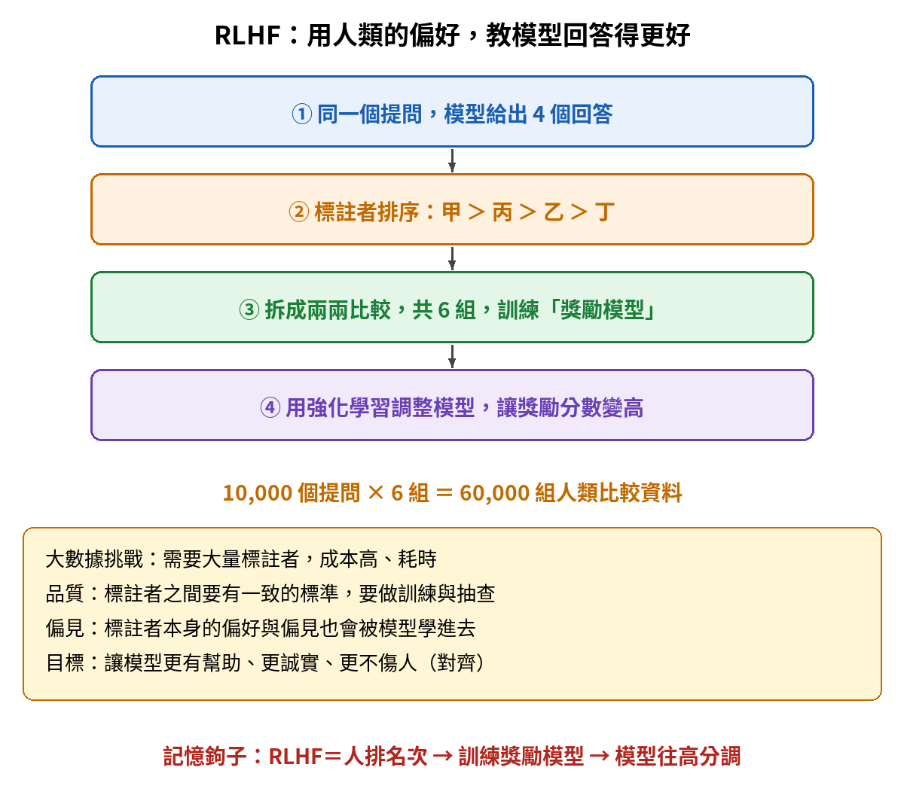
名詞各自定義
偏見檢測 Bias Detection
- 是什麼：檢查模型對不同群體（性別、族群、年齡、地區）是否有系統性差別待遇或刻板印象。
- 大數據怎麼幫忙：小樣本人工檢查不夠全面；可以大量產生不同群體的提問、收集大量輸出，用統計比較各群體的差異，找出有偏見的模式。
版權風險 Copyright
- 是什麼：訓練資料含有受版權保護的書籍、音樂、程式碼、圖片，可能有侵權與倫理爭議；模型輸出也可能和原作太像。
- 治理：確認資料來源與授權、尊重退出（opt-out）要求、過濾高度相似的輸出、保留資料來源紀錄。
數據記憶 Data Memorization
- 是什麼：大型模型把訓練資料的片段原封不動記住，在輸出時洩漏個資、密碼、程式碼。這牴觸隱私保護與資料最小化原則。
- 怎麼檢測：用訓練資料的開頭去提示模型，看它會不會接出原文；比對輸出和訓練資料的重複程度；做成員推論測試（判斷某筆資料是否在訓練集裡）。
- 怎麼降低：訓練前去重、過濾個資；差分隱私訓練；輸出端過濾。
深度偽造 Deepfake
- 是什麼：用生成式模型和大量人臉、聲音資料，做出以假亂真的換臉影片、合成聲音。
- 風險：詐騙、假新聞、名譽傷害、未經同意使用肖像；也凸顯大量臉部資料被蒐集與濫用的倫理問題。
- 治理：偵測模型、數位浮水印、內容來源標示、法規與平台規範。
綠色 AI Green AI
- 是什麼：關注訓練與使用大型模型的能源消耗與碳排放，追求更有效率、更永續的 AI。
- 做法：更有效率的模型架構、量化與蒸餾、減少重複實驗、選用再生能源的資料中心、報告能源與碳排數字。
RLHF（從人類回饋中強化學習）
- 怎麼做：同一個提問讓模型產生多個回答 → 人類標註者排序 → 拆成兩兩比較訓練獎勵模型 → 用強化學習調整語言模型，讓獎勵分數變高。
- 大數據挑戰：需要大量人類偏好資料：上圖 4 個回答就有 6 組比較，10,000 個提問就是 60,000 組。要找很多標註者、成本高；標註標準要一致；標註者自己的偏見也會被學進去。
提示工程的資料分析
- 是什麼：分析大量的（提問、回應、使用者評分）紀錄，找出哪種提示寫法效果最好，再整理成提示樣板。
- 和大數據的關係：樣本夠多，才能用統計分辨「真的比較好」還是運氣。
MLOps 的可重複性與可追溯性
- 可重複性 Reproducibility：同樣的資料、程式、設定，再跑一次能得到相同結果。
- 可追溯性 Traceability：能查出「這個模型是用哪一版資料、哪一版程式訓練的」，出問題時找得到原因。
- 做法：資料版本控管、特徵儲存庫（Feature Store）、實驗追蹤、模型登錄（Model Registry），常見工具如 MLflow。
多模態大數據整合
- 是什麼：把文字、圖片、聲音、影片、感測器資料放在一起訓練更通用的模型。
- 挑戰：格式、時間、品質都不一致，要對齊與清洗；儲存與運算量極大；隱私與版權問題更複雜。
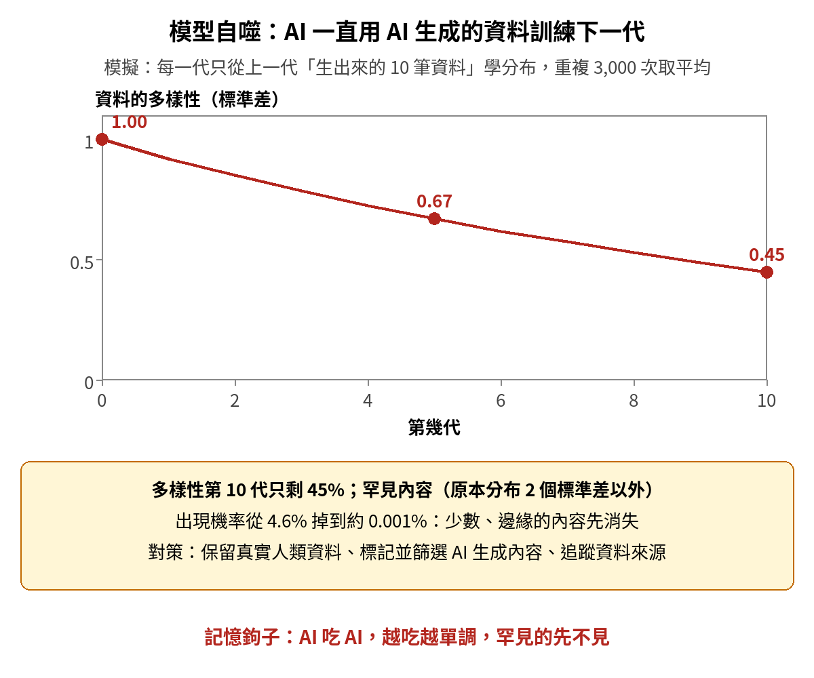
模型自噬 Model Collapse 與 AI 生成內容的管理
- 是什麼：AI 生成的內容越來越多，若下一代模型大量用 AI 生成的資料訓練，多樣性會一代一代變少，罕見、邊緣的內容先消失，品質下降。
- 例子：上圖模擬：每代只從上一代生出的資料學，第 10 代的多樣性只剩約 45%。
- 治理：保留真實人類資料、標記 AI 生成內容（浮水印、來源標示）、建立能索引與搜尋 AI 生成內容的管理機制、追蹤資料來源。
整合比較表（風險與對策）
| 風險 | 發生在哪 | 一句話 | 對策 |
|---|---|---|---|
| 偏見 | 資料、模型輸出 | 對某些群體不公平 | 大量輸出統計檢測、資料平衡、分群評估 |
| 版權 | 訓練資料、輸出 | 用了受保護作品 | 確認授權、來源紀錄、過濾相似輸出 |
| 數據記憶 | 模型 | 背下並吐出訓練資料 | 去重、去個資、差分隱私、輸出檢測 |
| 深度偽造 | 應用端 | 以假亂真的臉與聲音 | 偵測、浮水印、來源標示、法規 |
| 能源消耗 | 訓練與推論 | 耗電、碳排高 | 綠色 AI：效率、量化、再生能源 |
| 不對齊 | 模型行為 | 回答不誠實、有害 | RLHF、安全評估 |
| 無法追溯 | 整個流程 | 出事找不到原因 | MLOps：資料與模型版本控管 |
| 模型自噬 | 未來的訓練資料 | AI 吃 AI，越來越單調 | 保留真實資料、標記 AI 內容 |
- 偏見靠大量輸出做統計檢測；數據記憶是隱私問題；深度偽造靠偵測與標示。
- RLHF＝人排名次 → 訓練獎勵模型 → 模型往高分調；需要大量人類偏好資料。
- MLOps：可重複＝再跑一次一樣；可追溯＝查得到用哪一版資料與程式。
- 綠色 AI 管耗電與碳排；模型自噬＝AI 吃 AI，罕見的先不見。
總整理本章要記的十句話
- 生命週期：收、洗、存、整、訓、上、看；爬蟲資料先處理雜訊、重複、有害內容。
- 數據湖＝原樣先存、讀時套格式；資料倉儲＝先整理、寫時套格式；底層常用 HDFS 或物件儲存。
- Spark 用記憶體、比 MapReduce 快；Dask 是 Python 平行運算；要即時用 Flink、Kafka Streams、Spark Streaming。
- 監控延遲、錯誤率、資源使用率，是為了服務的可用性（有沒有開）、可靠性（有沒有錯）、效能（快不快）。
- 資料太多→資料平行；模型太大放不下→模型平行；Ray 的 Train、Tune、Serve＝訓練、調參、服務。
- 訓練很貴、組合很多時，用會參考過去結果的貝氏最佳化或 PBT，比網格、隨機搜尋省。
- 負載平衡分流、自動擴縮容依人潮開關副本；量化讓模型變小變快；快取讓重複問題直接拿答案。
- RAG：事先建好意思地圖 → 問題也換成座標 → 找最近的幾段交給語言模型；有依據，可減少幻覺。
- 差分隱私加雜訊、聯邦學習資料不出門、同態加密加密著算、合成數據補量補多樣；匿名化怕連結攻擊。
- 歐盟＋個資＝GDPR（法律）；ISO 27001 是自願認證的資安管理標準，不是法律。
考前速查全章名詞總彙整表
把五個單元的比較表濃縮成一張。複習時遮住右邊三欄，看名詞說得出定義，再對照。
| 名詞 | 一句話定義 | 口訣 | 容易跟誰搞混 |
|---|---|---|---|
| 單元① 生成式 AI 的大數據生命週期 | |||
| 爬蟲資料三問題 | 雜訊、重複、有害或低品質 | 先洗再用 | 資料漂移 |
| 去重 | 完全重複用雜湊、近似重複用 MinHash | 一篇留一份 | 抽樣 |
| 數據湖 | 原始資料原樣存，讀時套格式 | 先存再說 | 資料倉儲 |
| 資料倉儲 | 結構化資料，寫時套格式 | 先整理再存 | 數據湖 |
| HDFS／物件儲存 | 分散式檔案系統／雲端檔案倉庫 | PB 級也放得下 | 關聯式資料庫 |
| Spark | 記憶體分散運算 | 比 MapReduce 快 | MapReduce |
| Dask | Python 平行運算 | pandas 放大版 | Spark |
| 串流處理 | 資料一來就算：Flink、Kafka Streams、Spark Streaming | 即時 | 批次處理 |
| 標準化／數據增強 | 統一格式／變出多樣樣本 | 整齊／多樣 | 彼此 |
| A／B 測試 | 隨機分兩組比較版本 | 大量樣本才準 | 交叉驗證 |
| 數據漂移 | 上線後資料分布改變 | 世界變了 | 過度擬合 |
| 可用性／可靠性／效能 | 能不能用／會不會錯／快不快 | 開門／做對／上菜快 | 創造力、合規 |
| 單元② 分散式訓練與部署 | |||
| 分散式訓練 | 多台一起算，縮短時間、處理更大資料與模型 | 人多好辦事 | 量化 |
| 資料平行 | 拆資料，每台放整個模型 | 拆資料 | 模型平行 |
| 模型平行 | 拆模型，每台放一部分 | 放不下才拆 | 資料平行 |
| Ray | 分散式框架：Data、Train、Tune、Serve | 備料訓練調參上菜 | 資料庫、網頁工具 |
| 網格／隨機搜尋 | 全組合全試／隨機抽 | 盲試 | 貝氏最佳化 |
| 貝氏最佳化 | 代理模型預測下一組 | 看結果挑 | 樸素貝氏 |
| PBT | 一群一起練，落後複製領先再微調 | 邊練邊換 | 網格搜尋 |
| 容器化／Kubernetes | 打包環境／管理大量容器 | 貨櫃／碼頭調度 | 虛擬機 |
| 負載平衡 | 請求平均分給副本 | 叫號機 | 自動擴縮容 |
| 自動擴縮容 | 依流量增減副本 | 人多開櫃台 | 負載平衡 |
| 量化 | 參數用更少位元存 | 數字寫短 | 剪枝、蒸餾 |
| 快取／預先計算 | 常見結果先存／先算好 | 現成便當 | 量化 |
| 單元③ RAG 與向量資料庫 | |||
| 向量嵌入 | 文字轉成代表意思的一串數字 | 意思地圖上的座標 | 獨熱編碼 |
| 向量資料庫 | 存向量、做相似度搜尋 | 找最近的鄰居 | 關聯式資料庫 |
| 切塊 | 長文件切成段落再算向量 | 一段一個點 | 分詞 |
| RAG | 先檢索相關段落，再讓模型看著回答 | 先找再答 | 微調 |
| 幻覺 | 看似合理但不正確的內容 | 一本正經講錯 | 偏見 |
| 詞彙不匹配 | 說法和文件寫法不同而漏找 | 字不同、意思同 | 拼字錯誤 |
| 多語分詞器 | 子詞分詞，涵蓋多語、詞彙表平衡 | 切得剛剛好 | 斷句 |
| ROUGE／BLEU | 和參考答案比字詞重疊 | 要一把人做的尺 | 準確率 |
| 人工參考答案 | 人寫或審過的標準答案 | 又貴又花時間 | 模型輸出 |
| 單元④ 隱私保護與法規 | |||
| PII | 能認出個人的資訊 | 姓名證號病歷 | 一般統計資料 |
| 匿名化 | 拿掉或改寫可識別欄位 | 怕連結攻擊 | 加密 |
| 連結攻擊 | 多欄位組合對回真人 | 三欄就認得出 | 暴力破解 |
| 差分隱私 | 加計算過的雜訊，看不出個人 | ε 小更隱私 | 匿名化 |
| 聯邦學習 | 資料留本地，只傳模型更新 | 資料不出門 | 資料平行 |
| 同態加密 | 加密狀態下直接計算 | 加密著算 | 一般加密 |
| 合成數據 | 生成逼真的假資料 | 補量補多樣、不保證無偏見 | 數據增強 |
| GDPR | 歐盟個資保護法律 | 歐盟＋個資 | ISO 27001 |
| HIPAA／SOX | 美國醫療資訊／上市公司財報法律 | 醫療／財報 | GDPR |
| ISO 27001 | 自願認證的資安管理標準 | 標準不是法律 | GDPR |
| 單元⑤ 風險與治理 | |||
| 偏見檢測 | 大量輸出做統計比較 | 分群看差異 | 準確率 |
| 版權風險 | 訓練資料含受保護作品 | 先問授權 | 隱私 |
| 數據記憶 | 模型背下並洩漏訓練資料 | 隱私風險 | 泛化能力 |
| 深度偽造 | 以假亂真的臉與聲音 | 偵測＋標示 | 合成數據 |
| 綠色 AI | 關注能源消耗與碳排 | 省電的 AI | 環保主題內容 |
| RLHF | 人類排序 → 獎勵模型 → 強化學習 | 人排名次 | 監督式微調 |
| 可重複／可追溯 | 再跑一樣／查得到版本 | 留紀錄 | 可解釋性 |
| 模型自噬 | AI 吃 AI，多樣性變少 | 罕見的先不見 | 過度擬合 |
動手練自我檢測 10 題
自編情境練習，練的是「看情境選工具、選方法、算數字」。先自己想好答案，再點「看答案」。
- 公司要用爬蟲收集 5 億個網頁來訓練語言模型。正式訓練前，清洗這一站最先要處理哪三類問題？
看答案
雜訊、重複、有害或低品質內容（也要過濾個人資料）。雜訊是 HTML 標籤、廣告、亂碼；重複會讓模型過度記住某些內容、浪費運算，可用雜湊、MinHash 去重；有害內容和個資要過濾，避免模型學進去或吐出來。
- 團隊有 800 TB 的原始文字、圖片和音檔，還沒決定之後要怎麼用。應該先放進數據湖還是資料倉儲？底層可以用什麼儲存？
看答案
數據湖。 用途還沒決定、格式又多樣，適合「先原樣存、要用時才套格式」的 Schema-on-Read。底層可以用 HDFS 或物件儲存（如 S3），容量能擴充到 PB 級。
- 一家電商要在每筆刷卡交易發生後 1 秒內判斷是否可疑。應該用批次處理還是串流處理？請舉兩個工具。
看答案
串流處理。 要在 1 秒內反應，等整批再算來不及。工具例如 Apache Flink、Kafka Streams、Spark Streaming（Kafka 負責把交易事件即時送進來）。
- 某 AI 客服服務這個月（30 天）總共停機 4 小時。它的可用性大約是多少？有沒有達到 99.9%？另外，「回應平均要等 6 秒」是哪一方面的問題？
看答案
30 天＝43,200 分鐘，停機 240 分鐘，可用性＝1 − 240 ÷ 43,200 ≈ 99.44%，沒有達到 99.9%（99.9% 代表一個月停機大約不超過 43 分鐘）。「回應平均要等 6 秒」是效能（延遲）的問題。
- 一個模型有 1,300 億個參數，每個參數用 2 位元組存，一張 GPU 有 80 GB 記憶體。只看參數，至少要幾張 GPU？應該用資料平行還是模型平行？
看答案
參數需要 1,300 億 × 2 位元組 ＝ 260 GB，260 ÷ 80 ＝ 3.25，所以至少要 4 張 GPU（實際還要放梯度與中間結果，通常更多）。一張放不下，要用模型平行（大型模型常再加上資料平行）。
- 調參預算只夠訓練 20 次，但有 6 個超參數，每個想試 5 個值。網格搜尋要訓練幾次？你會改用哪一類方法？Ray 的哪個函式庫可以幫忙？
看答案
網格搜尋要 5 的 6 次方 ＝ 15,625 次，遠超過 20 次的預算。改用會參考過去結果的方法：貝氏最佳化或 PBT；Ray Tune 可以同時跑多組實驗並支援這些策略。
- 公司的勞動法規客服機器人常把舊規定講成新規定，而且法規每個月都會修正。你會建議用 RAG 還是每個月重新訓練模型？請用三步驟說明 RAG 怎麼找資料。
看答案
RAG。 法規常更新，只要更新向量資料庫就好，不必每月重訓。三步驟：① 事先把法規條文切段、算成向量存進向量資料庫；② 使用者提問時，用同一個模型把問題換成向量；③ 找出最接近的幾段條文，和問題一起交給語言模型，讓它看著條文回答，最好附上來源。
- 使用者問「太太生小孩，先生可以請什麼假」，文件裡寫的是「陪產檢及陪產假」。為什麼關鍵字搜尋可能找不到，向量檢索比較有機會找到？
看答案
提問裡沒有「陪產」兩個字，比對字就可能漏找（詞彙不匹配）。向量檢索比的是意思：「太太生小孩、先生請假」和「陪產假」在意思地圖上很接近，所以比較有機會找到。
- 一家公司把資料交給外部研究單位前，只刪了姓名和身分證字號，留下郵遞區號、出生日期、性別。這樣有什麼風險？還可以搭配哪些做法？
看答案
連結攻擊的風險：郵遞區號、出生日期、性別一組合，再對照外部名冊，很多人都能被認出來。可以搭配泛化（只留出生年、區碼前兩碼）、K-匿名、差分隱私、改提供合成數據，並做資料最小化與存取控管。
- 一家台灣的線上教育公司開始招收歐盟學員，同時打算申請 ISO 27001。這兩件事各是什麼性質？哪一個是處理學員個資時必須遵守的？
看答案
處理歐盟學員的個人資料，要遵守 GDPR，它是法律，公司設在台灣也適用（在台灣當然也要守個資法）。ISO 27001 是自願申請的資安管理認證標準，能證明資安管理做得好，但它不是法律，也不能取代 GDPR。